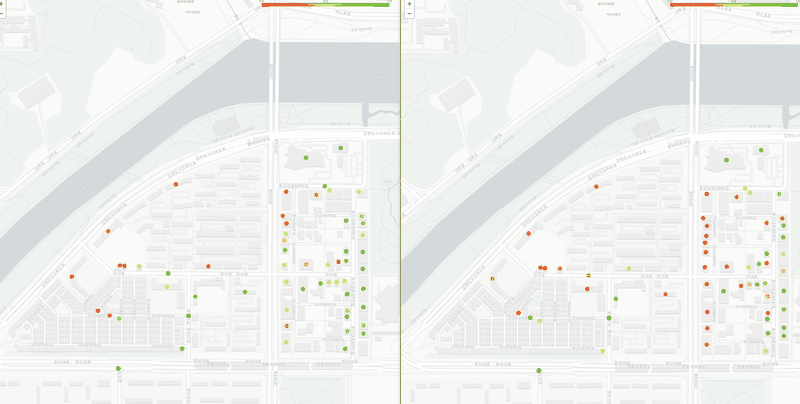

Research · Retrospective23
Research · Retrospective23Schema Before Data: Four Things an Ontology Buys a Knowledge Graph
A meeting about building a knowledge graph opens with talk of data, but the first thing that lands in the repository is not data — it is a dictionary. What shall we call a class, what counts as a relation, which key decides that two records are the same thing. Settled before a single row is loaded, these decisions look like bureaucracy whose only product is longer meetings. Putting a national address knowledge graph on top of a national standard ontology taught me the opposite. Fixing the schema first is a payment, and there is something definite you get for it.
 Research · Retrospective22
Research · Retrospective22Where, and What Happened: Wiring an Address Knowledge Graph to Multimodal Disaster Perception
The language of a disaster scene arrives as an address. But the judgement is made from video and sensors. Between those two languages sits a gap nobody fills for you. This year I built two pieces of software, one on each side of it — a knowledge graph that resolves addresses into coordinates and relations, and a perception API that reads four modalities on a single backbone. This is a record of trying to make them one stack, and of what is still undone.
 Tech · Issue21
Tech · Issue21Mining, Called Learning: The Generative-AI Copyright and Data-Licensing War
Generative AI was built by swallowing the writing, pictures, and code humanity has piled up over centuries. That swallowing stands behind an old shield called fair use. But in 2025, courts and markets began re-measuring the shield. Lawsuits and a $1.5 billion settlement, licensing deals spreading quietly, "content signals" closing the door on the web, and a technology that asks provenance back — this is a calm map of the war over training data.
 AI · Explainer20
AI · Explainer20It Works in the Demo, Breaks in Production
An AI agent that was faultless in the conference-room demo falls apart the moment you put it on real traffic. The problem is usually not the model's intelligence but its reliability — because succeeding once and succeeding every time are entirely different disciplines of engineering. This piece calmly lays out why agents break, how to evaluate (eval) them, and what guardrails must be in place so that even when they break, they fail safely — all from the standpoint of real deployment.
 AI · Explainer19
AI · Explainer19Bigger Model or Longer Thought? The Economics of Reasoning LLMs and Test-Time Compute
For years AI's growth formula was simple: bigger models, more data, more training compute. Then, from late 2024, the center of gravity quietly shifted — away from scaling the model and toward making it think longer at the moment of inference. This piece calmly anatomizes the background and mechanics of that shift, and the new economics in which tokens, latency, and cost are entangled.
 AI · Explainer18
AI · Explainer18Four Ways Retrieval Rescues Intelligence — Lexical, Semantic, Hybrid, and Graph RAG, and the Anatomy of Hallucination
A large language model's knowledge freezes the moment training ends. Retrieval-augmented generation (RAG) fills that gap by pulling in documents from outside the model. We dissect four retrieval architectures — Lexical, Semantic, Hybrid, and Graph — from first principles, and examine how they reduce hallucination and what still remains.
 AI · Explainer17
AI · Explainer17The Protocol That Became AI's HTTP: MCP and the Interoperability-Standard War
The moment chatbots turn into 'acting agents,' the bottleneck is no longer intelligence but the standard for connection. We anatomize how Anthropic's MCP became the de facto standard — its architecture, its politics, and the security homework that remains.
 Tech · Issue16
Tech · Issue16AI's Real Limit Is Electricity
Data-center power will roughly double in six years — from about 415 TWh in 2024 to about 945 TWh in 2030. The real bottleneck isn't the GPU; it's the grid that pushes electricity from power plant to rack.
 Tech · Issue15
Tech · Issue15From NVIDIA to NVIDIA
NVIDIA is investing up to $100 billion in OpenAI. We calmly dissect — through an engineer's eyes — the loop of money circling a single company that is supplier, customer, and investor at once, and the 'bubble' debate around it.
 AI · Explainer14
AI · Explainer14The Model With Refusal Erased: The Risks and Reasons for Being of the Abliterated LLM
A language model's 'refusal' is expressed as a single direction in its weights. A record of testing a model with only that direction erased, side by side with the standard version — and the balance between risk and necessity.
Do LLMs Understand Space? A 7,650-Question Spatial-Reasoning Benchmark
Reading a map is second nature to people. Dissecting six large language models across 7,650 questions, we re-weighed what it really means to 'understand space.'
 AI · Explainer12
AI · Explainer12The Language Model That Reads Maps: GeoLLM and Knowledge Graphs
Asked 'where is the nearest incinerator,' a language model gives a plausible but wrong answer. A build log of GeoLLM/GNLM that filled that gap with RAG, PostGIS, and a knowledge graph.
 Research · Retrospective11
Research · Retrospective11Drawing People on a Map Without a Camera: mmWave Geo-Referencing
Millimeter-wave radar sees a person not as an image but as a cluster of 'points.' The story of geo-referencing indoors with 3.5 cm average error, then scaling it to a stadium.
 AI · Explainer10
AI · Explainer10Time Is Performance: Accelerating Simulation with Adaptive Parallelism
City-scale traffic simulation gets slower the more accurate it becomes. A record of APE, in which AI predicts load and distributes computation across 24 cores.
 Research · Retrospective09
Research · Retrospective09Predicting the Unseen Pipe: Irregular Time Series, Ensembles, and Language Models
Beneath the city, water pipes that might burst at any moment. We went beyond 'when will it burst' to 'what to fix and how,' tying it all into one system.
 AI · Explainer08
AI · Explainer08Data and Activation Functions: Two Small Levers
How to raise neural-network performance without enlarging the model — expanding data with synonym clusters and combining activation functions asymmetrically.
 Research · Retrospective07
Research · Retrospective07Which Department Should I Go To? Classifying Health-Counseling Posts with BERT
In an era where non-face-to-face care is routine, people describe symptoms in sentences instead of diagnoses. A face-off among five models that read those clumsy sentences and route to the right department.
 Research · Retrospective06
Research · Retrospective06Reading Biosignals Without Contact: Smart Mirrors and Immersive Content
PPG that measures your pulse with a camera alone, and the story of digital signage that recognizes people.
 Research · Retrospective05
Research · Retrospective05The Empathetic Machine: Designing an Emotion-Aware Healthcare Chatbot
A chatbot that reads the hearts of older adults living alone. A record of raising the 'quality of conversation' through multiple models and emotion recognition.

AI · Explainer04Language Models That Infer Without a GPU: Lightweight LLMs and GeoLLM for the Field
On underground-utility sites with no server and no GPU, how can a language model work at all?
 Research · Retrospective03
Research · Retrospective03Drawing the Epidemic Curve in Advance: A Forecast Model with Reduced Phase Lag
How a model that trailed rapidly changing case counts by a few days was made to react 'on time.'
 AI · Explainer02
AI · Explainer02Translating Time Series: Forecasting the Future with Seq2Seq
How the encoder–decoder architecture once used for machine translation came to forecast water temperature, power demand, and nuclear generation.
The Science of Prompt Engineering: Design Principles That Raise Language-Model Performance
Even the same model answers differently depending on how you ask. How to treat prompting as 'engineering' rather than a 'knack.'